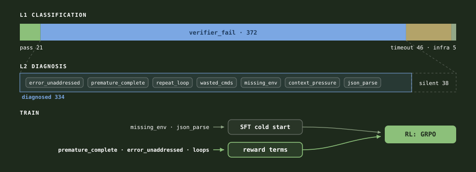
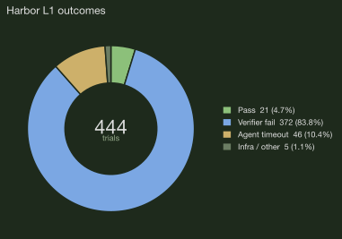
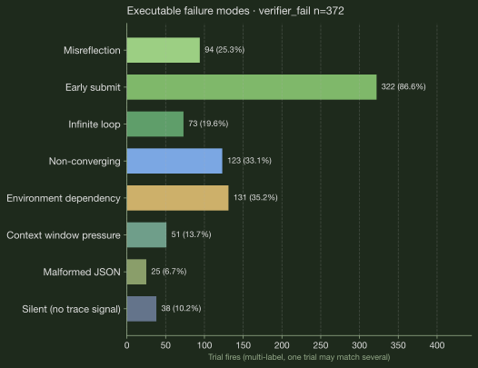
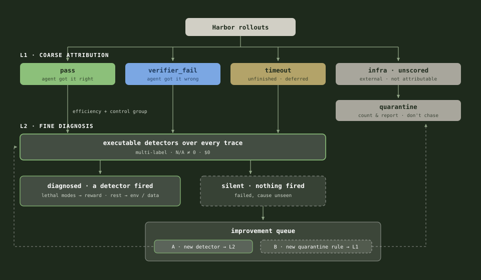

Designing an RLVR Environment from a Failure Taxonomy (Terminal-Bench 2)
Without looking at the data and the failure modes, the reward designs are not well grounded. I ran a verifiable failure taxonomy on gpt-oss-20b, then designed
the RLVR environment. This failure taxonomy-driven method is something I would carry to any RL environment design.

1. Benchmark selection
I chose Terminal-Bench 2, as every task ships a deterministic tests/test.sh verifier, so the reward
is a real pass/fail signal, and Harbor records full terminus-2 ATIF traces, which
makes the failure taxonomy in §2 possible. Harbor gives a clean skeleton: sandboxed
tasks, an agent loop, and verifiers, so I am wiring rewards onto this scaffolding instead of building the
harness from scratch.
2. Failure taxonomy
The baseline is gpt-oss-20b without any post-training, I ran a verifiable failure taxonomy on the baseline: 444 trials in Harbor,
each scored by rule-based ATIF detectors. The taxonomy is inspired by Atreja et al. [1], who used failure
detection for debugging and trace analysis; here I take it one step further and use the failure detections
as reward signals.
The taxonomy has two layers: L1 classifies what happened, L2 diagnoses why. This is my own implementation based on the paper; the original Pathfinder code is not open-sourced.
2.1 L1 classification
We categorize each agent trial into four categories (pass 21 ·
verifier_fail 372 · agent_timeout 46 · infra 5, of 444 trials), so that we
don't count infra crashes as agent behavior, and we can bypass the tasks the agent already passed.

verifier_fail (~84%), not timeout. The learning problem is how the agent fails the verifier.
L1 is a rule-based function over two fields of Harbor's result.json, deterministic. We don't
use an LLM judge here.
# one Harbor trial = one result.json + one ATIF trace
for result_json in jobs/<shard>/*/result.json:
row = normalize(result_json) # flatten to: task, trial_name, reward
# (= verifier_result.rewards.reward),
# exception_type, exception_message
row.l1 = classify_l1(row) # L1 is a rule-based function, no LLM
# reward >= 1.0 -> pass
# AgentTimeoutError -> agent_timeout
# vLLM / API / image-build error -> infra_*
# else (tests ran and failed) -> verifier_fail
upsert(supabase.tb2_trials, row) # one row per trial, keyed by trial_name2.2 L2 diagnosis
For only the verifier-fail trials, we run executable detectors over the agent trace to diagnose how the agent failed.
- This bucket has 84% of the L1 classifications, with complete traces and clean failure semantics, which makes it the highest-ROI bucket to tackle first. 334 of the 372 get a trace-visible diagnosis; the other 38 are silent (the verifier failed but no detector fired), so these are skipped.
- Timeouts are deprioritized at the baseline: 10% of trials against 84% verifier_fail. This routing choice follows the failure distribution, so it has to be re-derived after every training stage; it is a measurement, not a fixed rule.
After excluding the 38 silent trials, we have 334 trials with trace evidence. Figures 3 and 4 are computed over these.

premature_complete + error_unaddressed) fires 434+ times across multi-label trials.
| Failure mode | Detector | Computed signal |
|---|---|---|
| Misreflection | error_unaddressed | Prior step had errors; next step did not address them |
| Early submit | premature_complete | mark_task_complete while errors still present |
| Infinite loop | repeat_command_loop | Same bash keystrokes repeated ≥3× |
| Non-converging | high_wasted_commands | ≥50% agent steps carry error observations |
| Environment dependency | missing_env | command not found / ModuleNotFoundError |
| Context pressure | context_pressure | prompt_tokens ≥ 25K/step or total ≥100K |
| Malformed JSON | json_parse_warning | JSON parse errors in observation or message |
Each L2 detector is a rule-based function too, deterministic (regex, counters, thresholds over the trace). We don't use an LLM judge here.
# L2: verifier_fail rows only
for row in supabase.tb2_trials where l1 == "verifier_fail":
hit = first_hit(ordered_detectors, atif_trace(row))
# each detector = regex/counter rules over the trace, no LLM
# error_unaddressed, premature_complete, repeat_command_loop, ...
update row set l2_failure_class = hit.code, # null -> silent
evidence_step = hit.step2.3 Findings
Two findings drive the reward design. The agent mostly fails by submitting too early: the missing-reflection family (premature complete plus unaddressed errors) dominates Figure 3. And those failures land at steps 2–3, not at the turn cap (Figure 4), so the bottleneck is wasted early actions, not horizon length.
The failure modes also decide what goes to SFT and what goes to RL:
| Failure type | Modes | Fix |
|---|---|---|
| Doesn't know the move | missing_env · json_parse | SFT cold start (§4.3) |
| Knows the move, decides badly | premature_complete · error_unaddressed · loops | Reward penalties (§3.3) |
The logic: demonstrations teach moves, rewards teach decisions. You can imitate how to install a dependency; you can't imitate when to stop. §3.3 gives every detector its disposition.
3. Environment creation
An RL environment is three design decisions: what the agent sees (observation), what it can do (actions), and what it gets rewarded for. For Terminal-Bench 2, the first two mostly follow Harbor's terminus-2 setup; the real design work is in the reward, and that is where the failure taxonomy from §2 comes in.
Mechanically, with TRL + Harbor each task episode runs in a sandbox and ends with a verifier reward. During training GRPO samples G rollouts per task and normalizes advantages within the group, so the reward only has to be right in a relative sense across rollouts of the same task, not calibrated on an absolute scale.
3.1 State / observation space
One Terminal-Bench 2 task = one multi-turn episode in a persistent Harbor sandbox. The policy uses the terminus-2 format to interact with the sandbox.
Episode: 1 task = 1 persistent sandbox. At step t, the policy sees the chat transcript's token sequence.
[ system prompt | instruction.md | (assistant_turn, env_feedback)_1 … (assistant_turn, env_feedback)_{t-1} ]| Component | Content |
|---|---|
| System prompt | Terminal coding agent; acts only via bash |
| Task instruction | TB2 instruction.md |
| History | Per-step bash stdout/stderr/exit code |
| Encoding | Model chat template; loss_mask trains agent tokens only |
| Bounds | max_seq_len (e.g. 8K train / 32K eval) |
Observation is partial and stateful: same instruction, different history across steps. Harbor rollouts convert
to prompt/completion pairs with a loss_mask for TRL GRPOTrainer.
3.2 Action space
At each step, the policy emits one terminus-2 message. The meaningful action is what happens in the sandbox.
| Dimension | Definition |
|---|---|
| Action | One generation → one terminus-2 message |
| Semantic action | One bash tool call or mark_task_complete |
| Effect | Command runs in sandbox; state persists across steps |
| Horizon cap | MAX_TURNS (≈6 train / 20 eval) |
Horizon is capped at 6 in training since first failures cluster at steps 2–3 (Figure 4); eval keeps 20 for long-horizon recovery, a deliberate train/eval gap.
3.3 Reward functions
§2 tells me what fails; this is what I optimize. P0 is the core set; P1 are refinements I add if there is bandwidth.
The mapping is deliberately boring, and that is the point: every reward term traces back to a row in the taxonomy, and anything the taxonomy did not show me, I do not reward. The dominant failure, most trials miss the verifier, calls for dense partial credit so the GRPO groups are not all zeros. The early-submit and loop failures get explicit penalties, but only on top of partial credit, not in place of it. The 38 silent trials get nothing extra, because I cannot see why they failed and I will not penalize what I cannot measure.
| Failure | Reward | Priority |
|---|---|---|
| Most trials fail verifier (~84%) | R_outcome: partial credit from CTRF | P0 |
| Early submit, tests partly pass | Same R_outcome | P0 |
| Mark done while tests fail | Penalty −lam_pc · 1[premature_complete] | P1 |
| Repeat loops / wasted bash | R_agency tiebreaker among successes | P1 |
| Failures at steps 2–3, not turn cap | No horizon bonus or per-step shaping | P0 |
| Silent trials (38) | R_outcome only | P0 |
error_unaddressed | No separate term; same family as premature complete, penalized at the submit step | P1 |
missing_env / json_parse | No reward term; targeted by the SFT cold start (§4.3) | P2 |
context_pressure | No reward term; handled by env design, MAX_TURNS + truncated observations (§3.1) | P2 |
With these rows, all 7 detectors have an explicit disposition: imitation (SFT), reward pressure (RL), environment design, or deliberately nothing. This is the proposed plan; the P1/P2 terms are implemented but not all ablated yet.
R_outcome: passed_tests / total_tests ∈ [0, 1]. No LLM rubric.
R_agency: Among rollouts with R_outcome = 1.0, rank by turns + wasted_commands; bonus ∈ [0, λ]. It is only a tiebreaker, and it needs at least two successes in a group to fire at all. Early in training, when ~84% of trials fail, it almost never triggers. That is on purpose: efficiency only becomes worth rewarding once the model passes often enough to choose between a clean solution and a messy one.
R_integrity: Void trajectory on test/verifier tampering, hardcoded answers, or exfiltration (total ≤ 0).
total_i = R_outcome_i + λ · agency_bonus_i − integrity_penalty_i − lam_pc · 1[premature_complete]P0: outcome + integrity (λ = 0, lam_pc = 0). P1: agency and premature-complete penalty.
| Term | What it does | Module | Default mode |
|---|---|---|---|
| R_outcome | passed_tests / total_tests from the CTRF report; dense partial credit so GRPO groups don't go all-zero when most rollouts fail | r_outcome | P0 on |
| R_integrity | Voids the trajectory (total ≤ 0) on test tampering, hardcoded answers, or exfiltration; the anti-reward-hacking fuse | r_integrity | P0 on |
| R_agency | Efficiency tiebreaker among rollouts that fully pass, ranked by turns + wasted commands; needs ≥2 successes in a group to fire | r_agency + group tiebreak | P1 (lam=0.1) |
| premature_complete | Penalty for mark_task_complete while errors are still visible in the trace; the taxonomy's top failure | r_premature_complete | P1 (lam_pc=0.1) |
| Other Figure 3 detectors | Routed to SFT (§4.3) or env design (§3.1), not to reward | - | Not rewarded (design only) |
4. Model selection and training plan
With the environment fixed, the training plan is mostly downstream of it. Two choices still carry weight: which model I start from, and how I stop GRPO from burning rollouts on tasks it cannot learn from. The rest of this section is those two decisions and the knobs around them.
4.1 Base model
Decision: openai/gpt-oss-20b
Aligns with the Terminal-Bench 2 blog stack: Harbor + terminus-2 + gpt-oss-20b + verifiable rewards + GRPO.
The baseline is verifier-dominated (~84% verifier_fail), not timeout-limited; dense partial credit
produces non-degenerate GRPO groups instead of all-zero advantages.
gpt-oss-120b is the natural teacher for a later on-policy distillation (OPD)
stretch: dense per-token signal when rollouts end at zero verifier reward or truncate early (Figure 2 silent
bucket, Figure 4 early-step cluster).
4.2 RL algorithm
Decision: GRPO via TRL GRPOTrainer on Harbor rollouts.
For each task prompt, sample G independent terminus-2 rollouts, score with §3.3 rewards, normalize advantages within the group:
Â_i = (R_i − mean(R_{1..G})) / (std(R_{1..G}) + ε)| Property | Fit |
|---|---|
| Verifiable scalar reward | R_outcome from tests/test.sh; no learned RM |
| High variance across rollouts | Same task, different bash traces → spread in partial credit |
| No critic network | Simpler than PPO on long multi-turn trajectories |
| Reference recipe | GRPO [4] · AfterQuery blog + Eureka SFT→GRPO [3] |
| Stage | Role | Planned |
|---|---|---|
| SFT | Cold-start terminus-2 + occasional verifier passes | Yes |
| OPD (optional) | gpt-oss-120b teacher, reverse-KL on student trajectories | Stretch |
| GRPO | On-policy improvement with composed rewards | Yes |
4.3 Data splits and curriculum
| Split | Source | Size | Use |
|---|---|---|---|
| SFT gold | nvidia/Nemotron-Terminal-Corpus | 500 trajectories | SFT cold-start |
| GRPO pool | nvidia/Nemotron-Terminal-Synthetic-Tasks | 5,984 tasks; ~10–50 in band/run | Rollout + update |
| Probe band (discovery sweep) | Subset of synthetic pool | 10–80% pass@k | Curriculum gate |
| Eval (held-out) | Official Terminal-Bench 2 | 89 × k=5 | pass@1_macro |
| Eval (fast) | 10-task slice | 10 × k=5 | Iteration gate |
The probe band (10–80%) is a wide discovery sweep to find learnable tasks; GRPO then trains on the 20–60% sub-band, where group advantage is richest. Tasks at 0% or 100% contribute little or no group advantage.
4.4 Hyperparameters
Single-node LoRA on gpt-oss-20b (16GB-class MoE with mxfp4). Anchored to the AfterQuery blog band.
| Parameter | SFT | GRPO rollouts | GRPO update |
|---|---|---|---|
| Base weights | openai/gpt-oss-20b | SFT checkpoint | Same |
| Adapter | LoRA r=32, α=64 | - | Trainable |
| Learning rate | 2e-5 | - | 1e-6 |
| Optimizer | AdamW β=(0.9, 0.95) | - | AdamW |
| Steps | 250 (500 demos) | 15 rounds | 13–15 |
| Group size G | - | 8 | 8 |
| Max turns (train / eval) | - | 6 | 20 eval |
| Max seq len | 8K | 8K | 8K train; 32K eval |
| Temperature | - | 0.7 | - |
| Eval temperature | - | - | 1.0 |
Eval samples k=5 per task at temperature 1.0; pass@1_macro is the per-task pass rate averaged
over those 5 samples, so a non-zero eval temperature is intentional sampling for the macro estimate rather
than a single greedy decode.
LoRA on the mxfp4 MoE base: adapters sit on the mxfp4 MoE weights, target the attention and router projections, stay in bf16, and are validated for numerical stability on a 1-step smoke run before the full job.
Rollout gate
# Only commit a GRPO update when reward variance exists within a batch
std(R_{1..G}) > 0 for at least one task group4.5 Metrics
| Phase | Metric | Purpose |
|---|---|---|
| Eval | pass@1_macro on held-out 89 | Headline benchmark lift |
| Eval | Per-task pass rate, L1 outcome mix | Tie back to taxonomy |
| SFT | Train loss, eval pass@1 vs base | Cold-start signal |
| GRPO rollouts | Mean/std of R_outcome; fraction with reward_std > 0 | Gate policy updates |
| GRPO update | grad_norm, clipped fraction, KL | Stability |
| GRPO update | premature_complete, repeat_command_loop rates | Ablation vs taxonomy |
| Integrity | Voided trajectories (R_integrity) | Reward hacking guard |
End-to-end validation would run Harbor trajectories with CTRF rewards on Nemotron tasks, confirm
≥1 GRPO step with reward_std > 0, and check that a rep-10 eval shows monotonic
base → SFT → GRPO lift. The sections above are the design; full training runs are future work.
Primary ablation: P0 (R_outcome + R_integrity) vs P1 (+ R_agency + premature_complete).
5. Limitations and future steps
The honest caveats, ranked by how much they worry me:
- The detectors are gameable once they enter the reward. During the taxonomy they are
diagnostic tools with no adversary; inside the reward, the policy optimizes against them.
error_unaddressedlooks for fix-words in the next message, so the model can say "let me fix this" and do nothing;premature_completelooks for error text before submit, so the model can clear the screen before submitting. This is whyR_outcomedominates and the mode penalties stay small (0.1): gaming a detector does not move the verifier score. - The taxonomy is a snapshot; the policy moves. The 444 trials measured the baseline's failure distribution. After training the distribution shifts and the penalties can go stale. Next step is a living taxonomy: recompute the detector distribution on current rollouts every N steps, retire penalties whose modes disappear, add new ones the same way.
- No causal evidence per reward term yet. The run so far used
R_outcomeonly (P0). Until the P0-vs-P1 ablation runs, "taxonomy terms beat plain partial credit" is a hypothesis, not a finding. - The detectors themselves are unvalidated. No human labels, so I do not know each detector's precision; a noisy detector injects noise into the reward. Next: label ~50 fired trials per detector, report precision, and move regex signals toward execution-grounded ones (rerun the tests instead of grepping for error text).
- How TB2-shaped is this? The artifact, fully: the detectors read ATIF spans and terminus-2 actions. The method transfers wherever there is a deterministic verifier plus structured traces; the same two-layer taxonomy already runs on τ²-bench retail with a different detector pack. The open test is behavioral: train with these rewards on TB2, evaluate on another agent benchmark, and see whether "reflect before submitting" generalizes or is just TB2-shaped caution.
- This is environment design without the data lens. The failure taxonomy is the model lens: what the agent does wrong. The data side is missing: a distribution profile of the SFT set against the 89 eval tasks, a difficulty profile of the RL task pool (per-task reward mean and variance), and a data viewer to inspect both. The SFT set was hygiene-filtered and stratified-random, not failure-curated; failure-driven curation is untested. The two-lens version, data lens plus model lens, is the next iteration.

References
- Dhruv Atreja. 2026. Pathfinder: Self-Improving Agent Trace Analysis via Adversarial Self-Play and Code Execution. ACM Conference on AI and Agentic Systems, 1336–1339. doi:10.1145/3786335.3813199
- Jacob Helwig. 2026. On-Policy Distillation (OPD). verl documentation. verl.readthedocs.io
- Li, Hangxuan, et al. 2026. Eureka: Intelligent Feature Engineering for Enterprise AI Cloud Resource Demand Prediction. DASFAA 2026.
- Shao, Zhihong, et al. 2024. DeepSeekMath: Pushing the Limits of Mathematical Reasoning in Open Language Models. arXiv preprint arXiv:2402.03300. arxiv.org/abs/2402.03300
Appendix
A. Failure taxonomy × TB2 detectability
L1: Classification. L1 answers "what happened to this trial": the tests passed, the
tests ran and failed, the agent ran out of time, or the infra broke before the agent got a fair shot.
It is a pure if/else over two fields of Harbor's result.json (verifier reward + exception
type), no LLM.
L2: Diagnose. L2 answers "why did the agent fail the tests": for each verifier-fail trial, a set of small rules (regex, counters, thresholds) scan the trace and name the failure mode, each hit pinned to a specific step with the evidence attached.
Optional mapping from Atreja et al. [1] to terminus-2 + Harbor ATIF.
| Paper family | Subtype | TB2 | How / count |
|---|---|---|---|
| Architecture | Missing reflection | yes | premature_complete, error_unaddressed · 434+ |
| Architecture | Infinite loop | yes | repeat_command_loop · 73 |
| Architecture | Non-converging planner | yes | high_wasted_commands · 123 |
| Context | Window overflow | yes | context_pressure · 51 |
| Parsing/config | Malformed JSON | yes | json_parse_warning · 25 |
| Parsing/config | Missing env | yes | missing_env · 131 |
| Prompt | Contradictory instructions | no | Prompt not in ATIF spans |
| Tool misuse | Malformed tool schema | no | Only bash + mark_task_complete |
| Streaming/API | Tool-call breaks | no | No streaming spans |
B. Framework & stack
The design above does not lean much on which trainer I use; this section is the reproducibility detail. I run GRPO [4] (group-relative advantages on verifiable rewards) in TRL, with Harbor as the environment layer.
Why GRPO. This is the same post-training recipe I have already shipped in production. In Eureka [3], we frame enterprise feature engineering as agentic code generation: SFT cold-start on domain plans, then GRPO on a composed reward. Terminal-Bench 2 is the same shape at a different domain, but the loop is identical: sample rollouts, score with verifiers, normalize advantages within a group, update the policy.
Considerations
| Layer | Choice |
|---|---|
| Environment | Harbor (Modal/Docker sandboxes, terminus-2 agent, test.sh verifiers) |
| SFT | TRL SFTTrainer |
| RL | TRL GRPOTrainer |
| Reward | Custom module on verifier output (composed shaping terms) |